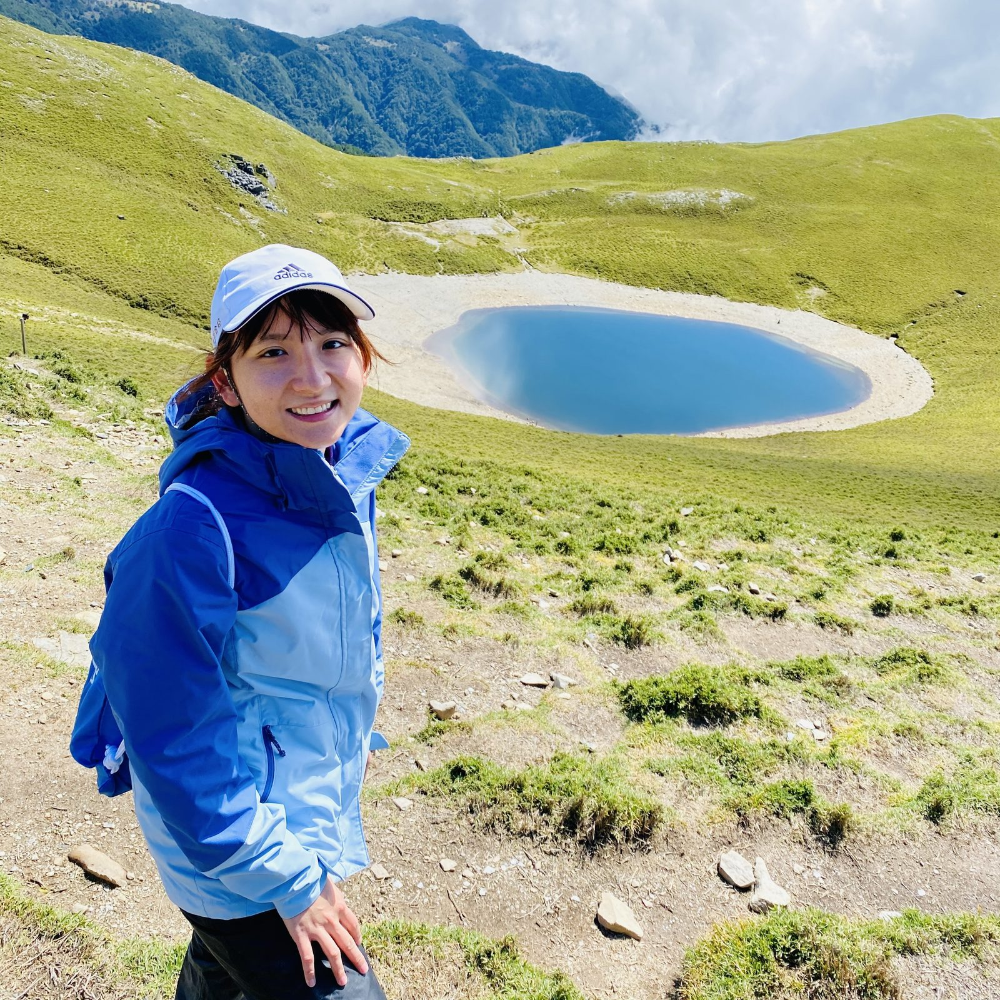
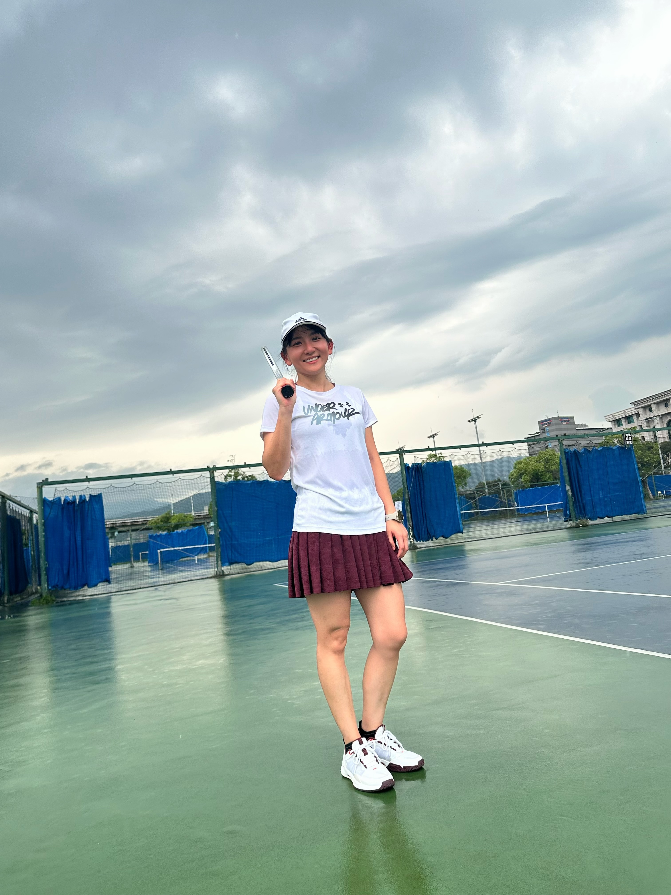
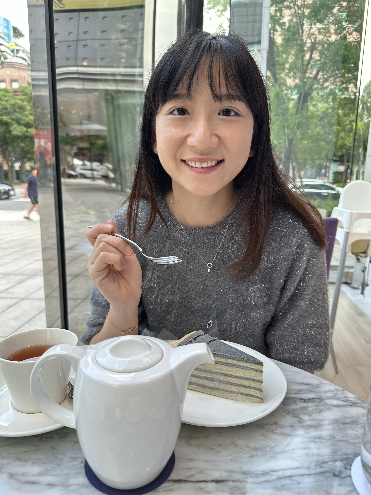
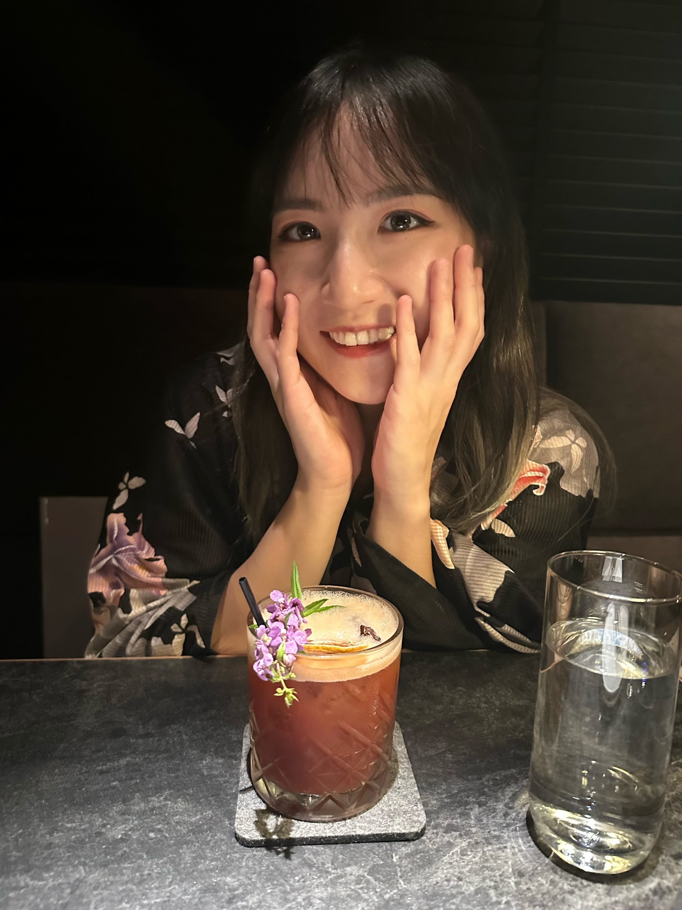

Side Project
Image2Demo — GPT-Image-2 展示平台
用 GPT-Image-2 玩出來的圖像作品集。一張照片能生成什麼？這頁記錄了各種 prompt 實驗的結果，從個人品牌圖卡、髮型色彩分析，到水彩插畫和手繪風格。
喜歡把模糊的東西搞清楚。
工作如此，生活也不例外。

我是台北的軟體工程師，目前帶領一個網頁開發團隊，工作是把模糊的需求變成可以用的產品。網頁開發這條路走了十年，從後端工程師走到部門 Team Lead，途中發現一件事：最難的從來不是技術，而是把對的問題問清楚。
我在乎的，是系統長期能不能撐得住，以及打造它的團隊走不走得遠。交付速度、程式品質、人的狀態，這三件事很少同時都好，但我喜歡在裡面找平衡。
工程之外，我對商業和服務設計同樣好奇。一個產品能不能成立，不只是功能寫沒寫好，背後的邏輯也一樣重要：為什麼這樣做、為誰做、值不值得做。這些問題我一直想搞懂。
下班後，你可以在山徑、雪坡或水下找到我，也可能在球場、廚房，或某個微醺的夜晚。
帶領網頁開發團隊，打造支援遊戲營運與內部業務需求的網頁系統。
主導並交付遊戲相關的網頁專案，包含官方網站、活動頁面與後台系統，服務全球遊戲玩家。
建置遊戲相關的網頁產品，包括官方網站、活動頁面及後台系統，支援遊戲的日常營運需求。
擔任教授研究助理，協助處理研究事務與行程協調，從繁雜的行政工作中練就細心與執行力，也對學術環境有了第一手的認識。
專注於可用性與可維護性的使用者介面開發。
設計可靠的服務、資料流與業務邏輯，以滿足營運需求。
把 AI 工具落地到工程流程與團隊協作的實際應用場景。
釐清真實需求、協調利害關係人，將模糊轉化為有效解決方案。
在交付、品質、團隊健康與長期永續性間取得平衡。
支持成員、建立信任、提供輔導，協助團隊更好地協作。
做過的東西、玩過的想法。有些還在更新，有些只是紀念一個好奇心。
用 GPT-Image-2 玩出來的圖像作品集。一張照片能生成什麼？這頁記錄了各種 prompt 實驗的結果，從個人品牌圖卡、髮型色彩分析，到水彩插畫和手繪風格。
工程師的腦袋很難關機，所以我用山、雪、水和球拍逼它休息。
偶爾加一點甜點、一杯調酒，還有一隻毛茸茸的兔子。

上山前覺得很多事很重要。下山後，它們還在，但感覺不太一樣了。

很少有什麼事，能讓腦袋裡只剩下當下這一秒。滑雪算一個。

水下沒有訊號、沒有通知，只有魚和自己的呼吸聲。我很喜歡那種安靜。

球打得好不好另說，那種想一直打到對了的心情，我懂了。

做甜點的時候不太想其他事。這本身，就是一種療癒。

微醺的夜晚，對話會比較誠實一點。我喜歡這樣的夜晚。

牠不說話，但存在感很強。每天回家看到牠，莫名就覺得沒什麼好煩的。
無論是關於工作、想法，還是台北最值得一試的調酒，都歡迎來找我聊聊。